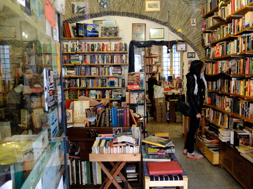

Rome's Best English Bookshop: Open Door Bookshop
This is the first in a series of posts that I hope to write featuring my favorite places around Rome. It’s only fitting that I start with a bookshop. I’ve been going to the Open Door Bookshop for nearly nine years. When I first began to live in Rome I was broke and the bookshop paid me for books left in the apartment by my landlord, old Italian books that earned me a few euros to buy another pack of tobacco and if I was lucky, another book. Now that I can afford to buy books, new and used, the Open Door is the only place in Rome to go for used English copies, rarities here in the Eternal City.
Standing before the Open Door’s wall of fiction, I usually end up deciding on at least one paperback, though through the course of my browsing, carry around several. (Yesterday it was Milan Kundera’s The Unbearable Lightness of Being.) There’s always a decent selection ranging from contemporary and genre to classical and Italian interest. The owners pack a lot of books on few shelves. It’s the crowdedness that I enjoy, the books coming at you from four directions, the cluttered, worn-in feeling of used books, books to be enjoyed and moved on. Because if I was living in an English reading country I would more often be found in a second hand bookstore than in a new one. There are more smells and more invitations from pages to flip through.
The Open Door Bookshop has been on Via della Lungaretta in Trastevere for nearly forty years, and is still owned by the same South African woman and her partner. Lately the nephew has been working behind the desk. So if you’re in the neighborhood, drop in for a book and support this family run bookshop.
Via Lungaretta, 23, behind the Cinema Reale on Viale Trastevere; +39 065896478

· · · · · · · · · · · · · · · · · · · ·